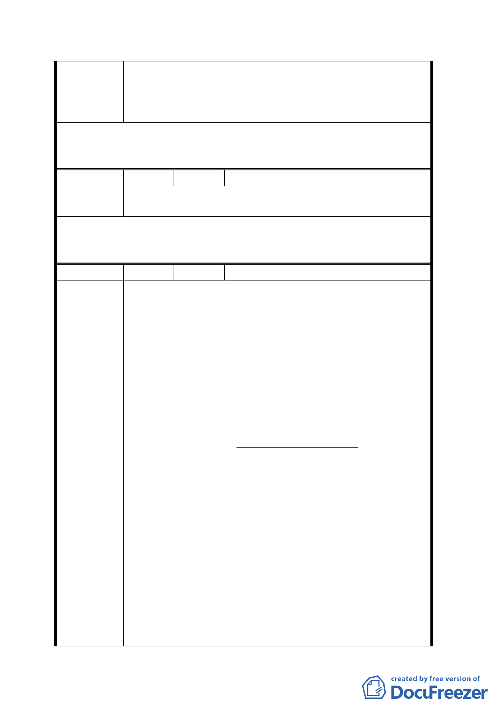

35 年前即合法存在於該土地上，如僅以土地權屬來
考量，將會造成使用中斷，無法整體規劃，對環境
美化造成破壞，更是建築私有地不完整，造成畸零
無法使用。更無法有效運用與都市更新計畫之美意。
建 議 辦 法 反對變更為廣場用地。
委員會決
議
同決議一、二。
編 號 21 陳情人 劉廣義
陳情理由
本案位於總統府後方，又毗鄰捷運西門站及中華路
景觀大道。
建 議 辦 法 本案不應再延宕。
委員會決
議
同決議一、二。
編 號 22 陳情人 陳 張 秋 月
民國 93 年 10 月 8 日 折 衷 替 代 案
建議人：陳 義 淡（代表：陳張秋月）
通訊地址：台北市貴陽街 2 段 3 號
對“變更臺北市萬華區中華路理教公所附近第四種
商業區為廣場用地計畫案“（以下簡稱廣場計畫案）
國有財産局之標售作業、已決定於本月 28 日開標、
若無人得標、下述折衷替代方案似甚倶有慎重考慮
陳情理由
之價値。
此方案能（１）接納幾乎関係人全部（含沿貴陽街
側合法建築物所有権人）之期望（２）完全避免依
靠法律而執行之半強制非民主手段、如拆除已有房
屋等（３）不需動用政府預算、以發放各種補償金、
及拆除已有房屋之費用。
境内違建戸之眞實情況：實際違建戸之準確數字、
至今尚無可靠資料。市政府也只能靠萬華區戸政事
務所依設有戸籍所計出之、官方統計竟有三百八十
多戸。境内居民至為複雑。僅設有戸籍之所謂人頭
戸不在少數。違建戸或違建房屋、幕後有人在收購。
有不少居住人是受雇而居。居民中有不少承租人、
二七